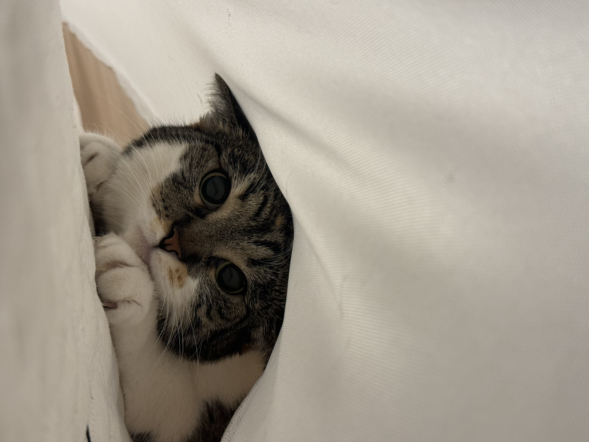

The Birthday Girl
This is ButterCup. She is turning 6 this year and loves any attention she can get. She is a Calico Cat who loves her treats as well as being pet very much. She's been with me since she was a baby and has always gotten into some trouble while still being cute. While she is sometimes dramatic she is still one of the nicest felines you'll ever meet and the most violent thing she has done is hissed when angry.